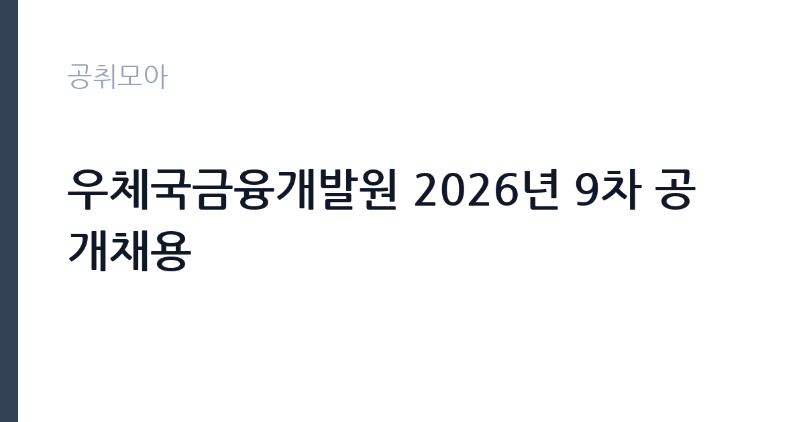

[공공기관] 우체국금융개발원 2026년 9차 공개채용
우체국금융개발원 · 서울 · 마감 2026-10-06 (D-14) · 출처 나라일터

한눈에 보는 모집 조건
| 기관 | 우체국금융개발원 |
|---|---|
| 공고명 | 우체국금융개발원 2026년 9차 공개채용 |
| 고용형태 | 정규직 |
| 근무지 | 서울 |
| 게시일 | 2026-09-22 |
| 마감일 | 2026-10-06 (D-14) |
지원자격, 이렇게 읽으세요
- 정규직 21명 무기계약직 3명
- 접수 ~2026-10-06 마감
- 세부 조건은 원문 공고문 확인
모집 분야와 직급별 자격요건은 나라일터의 원문 공고에서 확인하셔야 합니다. 정규직 21명과 무기계약직 3명으로 직종이 나뉘어 있으므로, 본인의 조건에 맞는 분야를 선택하시기 바랍니다. 금융과 보험, 전산 등 다양한 분야가 포함될 수 있어 전공별로 지원 전략을 세우시기 바랍니다. 세부 제출서류와 접수방법도 원문에서 반드시 확인하시기 바랍니다.
이 공고의 포인트
첫 번째 포인트는 총 24명의 대규모 채용이라는 점입니다. 모집 인원이 많을수록 서류전형의 문턱이 낮아질 수 있습니다. 두 번째로 정규직 21명 외에 무기계약직 3명도 함께 뽑아, 다양한 고용 형태의 기회가 열려 있습니다. 세 번째로 우체국금융개발원은 우정사업본부 산하의 안정적인 기관으로, 금융 실무 경험을 쌓기에 좋습니다. 서울 근무라는 점도 장점입니다.
전형은 어떻게 진행되나
전형은 서류전형과 필기·면접전형으로 진행되는 것이 일반적이며, 세부 일정은 원문 공고에서 확인하시기 바랍니다. 대규모 채용이므로 분야별로 전형 일정이 다를 수 있습니다. 접수 기간이 약 2주로 여유가 있으나, 자기소개서 작성에 시간을 들이시기 바랍니다. 나라일터 원문의 분야별 안내를 꼼꼼히 읽어보시기 바랍니다.
이런 분께 추천해요
- 우체국금융 등 금융 공공기관 취업을 목표로 하시는 분
- 서울 근무가 가능하고 대규모 공채에 도전하고 싶으신 분
- 정규직과 무기계약직 중 본인 조건에 맞는 자리를 찾는 구직자
지원 전 체크리스트
- 지원 분야의 자격요건과 우대사항을 원문에서 확인했습니다
- 정규직과 무기계약직 중 지원 분야를 정했습니다
- 자기소개서와 증빙서류를 준비했습니다
- 원문 공고문의 접수방법과 마감일 10월 6일을 확인했습니다
모집 일정과 제출 타이밍
마감일은 2026년 10월 6일입니다. 접수 기간이 약 2주로 비교적 여유가 있으나, 대규모 채용이라 지원자가 몰릴 수 있으니 미리 접수하시기 바랍니다. 서류 합격자 발표와 필기·면접 일정은 분야별로 다를 수 있어 원문과 기관 안내를 수시로 확인하시기 바랍니다.
직무 이해하기: 공공기관
우체국금융개발원은 우체국 예금과 보험 사업의 지원과 개발 업무를 맡습니다. 금융상품 운영 지원과 전산 시스템 관리, 고객 서비스 지원 등이 주요 업무입니다. 서울에서 근무하며, 공공기관 카테고리 공고입니다. 개발원은 우체국예금과 우체국보험의 상품 기획 지원, 전산 시스템 운영, 콜센터와 영업점 지원, 금융사고 예방 등의 업무를 수행합니다. 우정사업본부와 긴밀히 협력하며 공공금융의 안정성을 뒷받침합니다.
자기소개서 작성 팁
자기소개서에서는 우체국금융에 대한 이해와 지원 분야의 실무 역량을 구체적으로 기술하시기 바랍니다. 금융 관련 자격증과 인턴 경험이 있다면 수치와 함께 제시하시기 바랍니다. 공공 금융기관의 역할에 대한 본인의 생각을 진정성 있게 서술하시기 바랍니다.
면접 준비 포인트
면접에서는 우체국금융에 대한 이해와 지원 분야의 전문 지식을 질문받을 가능성이 큽니다. 최근 우체국금융의 사업 방향을 미리 살펴보시기 바랍니다. 대규모 공채인 만큼 본인만의 차별점을 명확히 전달하시기 바랍니다. 우체국금융의 공적 역할에 대한 질문에는 서민금융과 포용금융의 관점에서 답변을 준비하시기 바랍니다. 지원 분야의 실무 경험을 구체적인 사례와 함께 전달하시기 바랍니다.
급여·근무조건 읽는 법
보수 수준은 원문 공고문에서 확인하셔야 합니다. 개발원 정규직의 급여는 기관 보수규정에 따른 직급·호봉 테이블이 적용됩니다. 알리오 경영공시에서 기관의 평균보수를 참고하실 수는 있으나, 개인의 초임과는 차이가 있으므로 원문을 기준으로 판단하시기 바랍니다. 무기계약직의 처우 조건도 원문에서 함께 확인하시기 바랍니다.
자주 묻는 질문
- 모집 규모는 얼마나 됩니까
정규직 21명과 무기계약직 3명으로 총 24명을 선발합니다. 분야별 인원은 원문 공고문에서 확인하시기 바랍니다. - 근무지는 어디입니까
우체국금융개발원 본사가 위치한 서울에서 근무하게 됩니다. 세부 근무 부서는 임용 시 안내받으시게 됩니다. - 무기계약직의 처우는 어떻습니까
무기계약직은 기간의 정함이 없는 근로자로, 정년까지 근무가 가능합니다. 세부 처우 조건은 원문에서 확인하시기 바랍니다.
함께 보면 좋은 공고
[공공기관] 한국연구재단 PM(기초연구본부장) 초빙 재공고 — 마감 2026-10-13[공공기관] 칠곡경북대학교병원 2026년 9월 5차 임시직원 채용공고(물리치료사, 간호사, 주차, 조경관리) — 마감 2026-09-28[공공기관] [KDI국제정책대학원] 2026년 제10차 인턴직원 채용(경영기획) — 마감 2026-10-08출처: 나라일터 공개정보를 바탕으로 공취모아가 정리한 안내글입니다. 모집 조건·일정은 변경될 수 있으니 지원 전 반드시 원문 공고문을 확인하세요. 본 글은 정보 제공용이며 합격을 보장하지 않습니다.